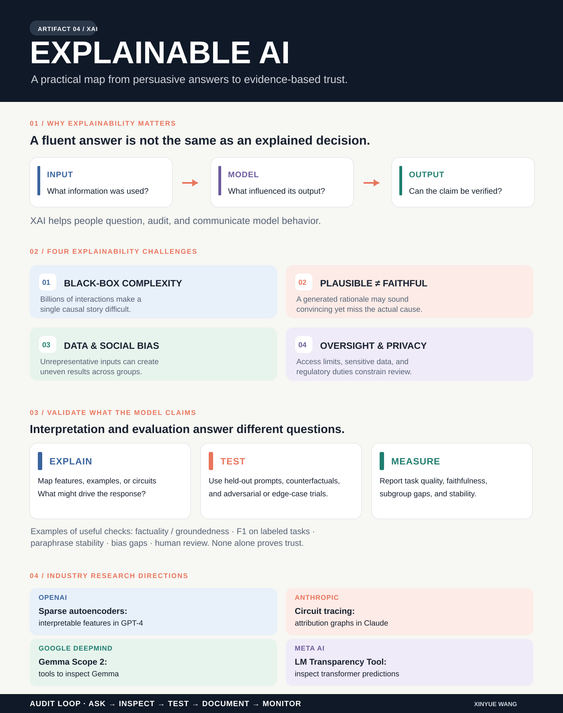

01 / OPACITY
Where did the answer come from?
Knowledge is distributed across many learned representations. A single attention map or short verbal explanation captures only part of the process.
Large language models can deliver confident answers without an equally transparent account of how they arrived there. This visual field guide connects explainability, validation, and measurable evidence to responsible AI decisions.
Explore the infographicThis one-page infographic is designed for a non-technical audience. It highlights four interpretation challenges, distinguishes explanation from evaluation, and summarizes the public research directions used to investigate systems such as GPT, Claude, Gemini-related models, and Llama.

Select the image to view it at full resolution. A downloadable PNG version is also available: Save PNG.
GPT, Claude, Gemini, and Llama are large, nonlinear systems. A polished verbal justification does not automatically reconstruct the computation that produced a prediction.
Knowledge is distributed across many learned representations. A single attention map or short verbal explanation captures only part of the process.
Plausibility is not proof. A model may offer a convincing rationale that does not faithfully identify the actual contributing mechanism.
Uneven training coverage and social patterns can lead to different outcomes across languages, communities, or demographic contexts.
Privacy obligations, limited model access, and documentation gaps can make independent inspection difficult—especially in regulated fields.
Mechanistic interpretability investigates internal computations; model evaluation checks whether outputs meet quality, safety, and fairness expectations. Both are needed, but neither substitutes for the other.
Choose an evaluation lens for a hypothetical AI assistant answering questions from a company policy document. The prompts below illustrate responsible audit design, not results from a deployed model.
Does each important claim have support in the retrieved policy or another reliable source? Can an evaluator verify a cited passage, rather than just seeing a citation-shaped string?
Does the answer remain materially consistent when a user rephrases a question without changing its meaning?
Does a protected or irrelevant attribute change how the assistant evaluates an otherwise identical request?
Is the supplied explanation evidence about the model's actual behavior, or a plausible story generated after the prediction?
Educational scope: No GPT or other model is run by this page. The audit examples and questions are illustrative, not empirical benchmark results.
These are research and transparency approaches—not guarantees that a model's complete internal reasoning can be recovered.
Research on sparse autoencoders extracts candidate interpretable features from GPT-4 activations.
Research overview ↗Attribution graphs help investigate selected pathways influencing Claude's outputs.
Research overview ↗Open interpretability resources support deeper investigation into Gemma model features.
Research overview ↗An interactive toolkit for inspecting parts of a transformer's prediction pathway.
Research overview ↗I designed this infographic as a left-to-right and top-to-bottom journey: first ask what a model's answer depends on, then identify why interpretation is difficult, and finally connect research techniques with practical evaluation checks. The separate industry panel grounds the topic in documented work by leading AI organizations. The companion audit lens makes the concepts actionable without presenting illustrative cases as measured outcomes.
My main takeaway is that an attractive explanation should never be treated as a substitute for validation. Trustworthy AI requires transparent communication of uncertainty, systematic measurement, bias and edge-case testing, and appropriate human oversight. In high-impact domains such as finance or healthcare, the consequences of unsupported confidence can be substantial.